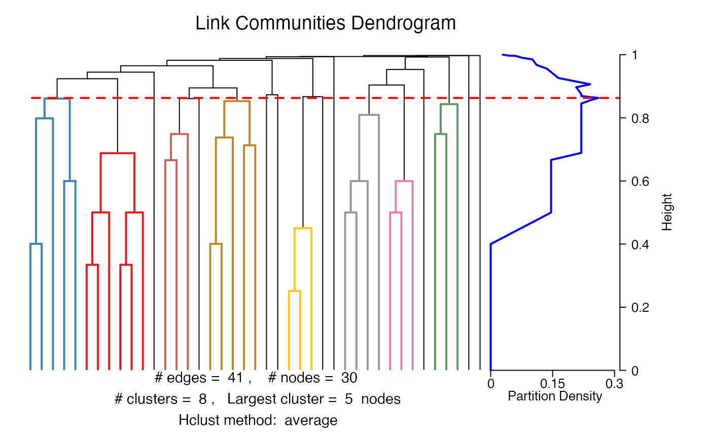
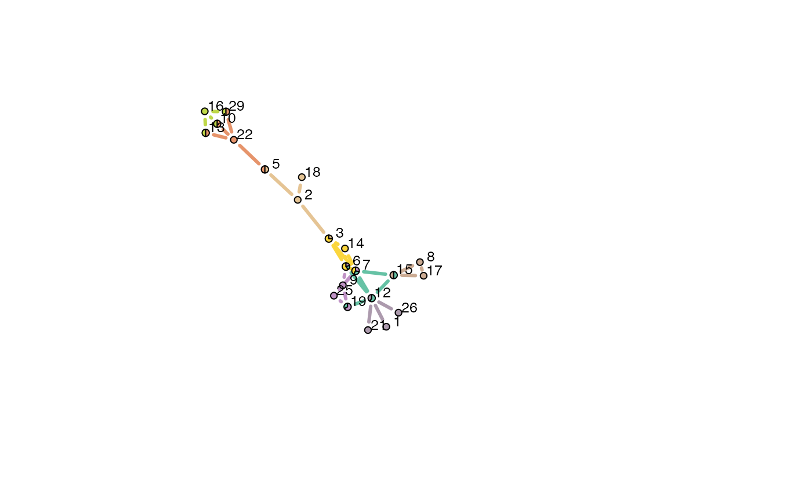
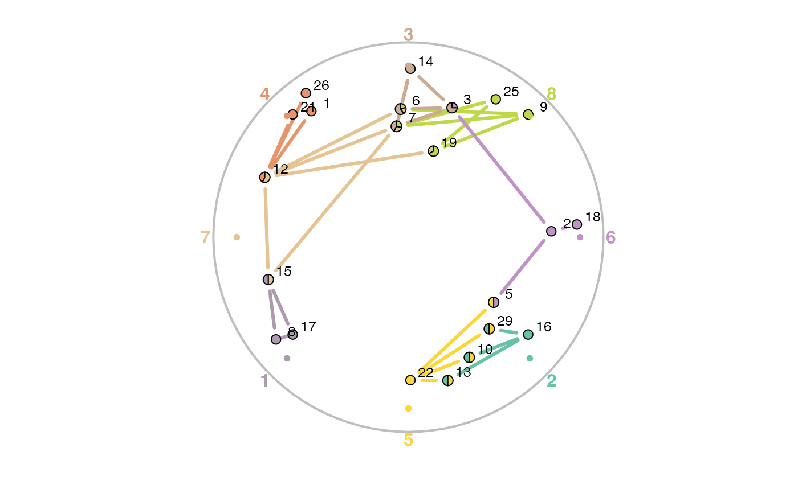

plotLinkCommGraph.RdThis function is called by plot.linkcomm to plot a graph layout of the link communities.
plotLinkCommGraph(x, clusterids = 1:length(x$clusters), nodes = NULL, layout = layout.fruchterman.reingold, pal = brewer.pal(7, "Set2"), random = TRUE, node.pies = TRUE, pie.local = TRUE, vertex.radius = 0.03, scale.vertices = 0.05, edge.color = NULL, vshape = "none", vsize = 15, ewidth = 3, margin = 0, vlabel.cex = 0.8, vlabel.color = "black", vlabel.family = "Helvetica", vertex.color = "palegoldenrod", vlabel = TRUE, col.nonclusters = "black", jitter = 0.2, circle = TRUE, printids = TRUE, cid.cex = 1, shownodesin = 0, showall = FALSE, verbose = TRUE, ...)
| x | An object of class |
|---|---|
| clusterids | An integer vector of community IDs. Defaults to all communities. |
| nodes | A character vector naming the nodes to be plotted. If NULL, then community IDs are used instead. Defaults to NULL. |
| layout | A character string or function identifying the layout algorithm to be used for positioning nodes in the graph. Defaults to |
| pal | A character vector describing a colour palette to be used for colouring the link communities in the graph. Defaults to |
| random | Logical, whether to randomise the link colours. Defaults to TRUE. |
| node.pies | Logical, whether to plot node pies showing as a pie chart the fraction of each node's edges which belong to each of its communities. Defaults to TRUE. |
| pie.local | Logical, whether to include pie segments for just the communities to which the chosen nodes belong, or for all communities. In the latter case, communities that are not present among the chosen nodes will appear as empty segments in the node pies. Will be ignored if node.pies is FALSE. Defaults to TRUE. |
| vertex.radius | A real number specifying the vertex radius. Defaults to 0.03. Will be ignored if node.pies is FALSE. |
| scale.vertices | A real number specifying the fraction of increase in vertex radius for each community membership. If NULL then all vertices are the same size. Defaults to 0.05. Will be ignored if node.pies is FALSE. |
| edge.color | A character string specifying the colour of edges. Defaults to |
| vshape | A character string specifying the shape of the nodes. Can be one of |
| vsize | An integer vector of node sizes. If there is a single value this will be used for all nodes. If there are multiple values, it must be the same length as the number of nodes in the network to be visualized. See |
| ewidth | An integer vector of edge widths. If there is a single value this will be used for all edges. If there are multiple values, it must be the same length as the number of edges in the network to be visualized. See |
| margin | A numerical value specifying the amount of empty space around the graph. Negative values will zoom into the graph. Defaults to 0. |
| vlabel.cex | A numerical value specifying the size of node labels. Defaults to 0.8. |
| vlabel.color | A character string specifying the color of node labels. Defaults to |
| vlabel.family | A character string specifying the font family for node labels. Defaults to |
| vertex.color | A character string specifying the colour of nodes. If this is a character vector then the colours will be recycled. Defaults to |
| vlabel | Logical, whether node labels are to be added. Defaults to TRUE. |
| col.nonclusters | A character string specifying the colour of edges that do not belong to any communities. Will only have an effect if |
| jitter | A numerical value specifying the range (negative to positive) of random noise that will be added to nodes that have identical x-y coordinates. Defaults to 0.2. Only used for Spencer circle layouts. |
| circle | Logical, whether to display a circle for a Spencer circle layout. Defaults to TRUE. |
| printids | Logical, whether to display community IDs at their anchor points around the Spencer circle. Defaults to TRUE. |
| cid.cex | A numerical value specifying the size of community IDs around the Spencer circle. Defaults to 1. |
| shownodesin | An integer value specifying the number of communities a node must belong to before it will be displayed. If 0 then all nodes are displayed. Defaults to 0. |
| showall | Logical, whether to display all links in the network regardless of whether they belong to communities or not. Defaults to FALSE. |
| verbose | Logical, whether to print the progress of the calculation to the screen. Defaults to TRUE. |
| ... | Additional arguments to be passed to |
Here we describe the parameters for plotting link community graphs using:
plot(x, type = "graph", layout = layout)
Various graph layouts are available:
"spencer.circle"
layout.random
layout.circle
layout.sphere
layout.fruchterman.reingold
layout.kamada.kawai
layout.spring
layout.reingold.tilford
layout.fruchterman.reingold.grid
layout.lgl
layout.graphopt
layout.mds
layout.svd
layout.norm
All of these, except the "spencer.circle", are described in more detail in the igraph package. The "spencer.circle" is described in layout.spencer.circle.
A graph plot.
Kalinka, A.T. and Tomancak, P. (2011). linkcomm: an R package for the generation, visualization, and analysis of link communities in networks of arbitrary size and type. Bioinformatics 27, 2011-2012.
Alex T. Kalinka alex.t.kalinka@gmail.com
plot.linkcomm, layout.spencer.circle, graph.feature, igraph.plotting
#> Checking for loops and duplicate edges... 0.000% Checking for loops and duplicate edges... 2.174% Checking for loops and duplicate edges... 4.348% Checking for loops and duplicate edges... 6.522% Checking for loops and duplicate edges... 8.696% Checking for loops and duplicate edges... 10.870% Checking for loops and duplicate edges... 13.043% Checking for loops and duplicate edges... 15.217% Checking for loops and duplicate edges... 17.391% Checking for loops and duplicate edges... 19.565% Checking for loops and duplicate edges... 21.739% Checking for loops and duplicate edges... 23.913% Checking for loops and duplicate edges... 26.087% Checking for loops and duplicate edges... 28.261% Checking for loops and duplicate edges... 30.435% Checking for loops and duplicate edges... 32.609% Checking for loops and duplicate edges... 34.783% Checking for loops and duplicate edges... 36.957% Checking for loops and duplicate edges... 39.130% Checking for loops and duplicate edges... 41.304% Checking for loops and duplicate edges... 43.478% Checking for loops and duplicate edges... 45.652% Checking for loops and duplicate edges... 47.826% Checking for loops and duplicate edges... 50.000% Checking for loops and duplicate edges... 52.174% Checking for loops and duplicate edges... 54.348% Checking for loops and duplicate edges... 56.522% Checking for loops and duplicate edges... 58.696% Checking for loops and duplicate edges... 60.870% Checking for loops and duplicate edges... 63.043% Checking for loops and duplicate edges... 65.217% Checking for loops and duplicate edges... 67.391% Checking for loops and duplicate edges... 69.565% Checking for loops and duplicate edges... 71.739% Checking for loops and duplicate edges... 73.913% Checking for loops and duplicate edges... 76.087% Checking for loops and duplicate edges... 78.261% Checking for loops and duplicate edges... 80.435% Checking for loops and duplicate edges... 82.609% Checking for loops and duplicate edges... 84.783% Checking for loops and duplicate edges... 86.957% Checking for loops and duplicate edges... 89.130% Checking for loops and duplicate edges... 91.304% Checking for loops and duplicate edges... 93.478% Checking for loops and duplicate edges... 95.652% Checking for loops and duplicate edges... 97.826% Checking for loops and duplicate edges... 100.000% #> Found and removed 4 loop(s) #> Found and removed 2 duplicate edge(s) #> Calculating edge similarities for 41 edges... 0.00% Calculating edge similarities for 41 edges... 2.56% Calculating edge similarities for 41 edges... 5.13% Calculating edge similarities for 41 edges... 7.69% Calculating edge similarities for 41 edges... 10.26% Calculating edge similarities for 41 edges... 12.82% Calculating edge similarities for 41 edges... 15.38% Calculating edge similarities for 41 edges... 17.95% Calculating edge similarities for 41 edges... 20.51% Calculating edge similarities for 41 edges... 23.08% Calculating edge similarities for 41 edges... 25.64% Calculating edge similarities for 41 edges... 28.21% Calculating edge similarities for 41 edges... 30.77% Calculating edge similarities for 41 edges... 33.33% Calculating edge similarities for 41 edges... 35.90% Calculating edge similarities for 41 edges... 38.46% Calculating edge similarities for 41 edges... 41.03% Calculating edge similarities for 41 edges... 43.59% Calculating edge similarities for 41 edges... 46.15% Calculating edge similarities for 41 edges... 48.72% Calculating edge similarities for 41 edges... 51.28% Calculating edge similarities for 41 edges... 53.85% Calculating edge similarities for 41 edges... 56.41% Calculating edge similarities for 41 edges... 58.97% Calculating edge similarities for 41 edges... 61.54% Calculating edge similarities for 41 edges... 64.10% Calculating edge similarities for 41 edges... 66.67% Calculating edge similarities for 41 edges... 69.23% Calculating edge similarities for 41 edges... 71.79% Calculating edge similarities for 41 edges... 74.36% Calculating edge similarities for 41 edges... 76.92% Calculating edge similarities for 41 edges... 79.49% Calculating edge similarities for 41 edges... 82.05% Calculating edge similarities for 41 edges... 84.62% Calculating edge similarities for 41 edges... 87.18% Calculating edge similarities for 41 edges... 89.74% Calculating edge similarities for 41 edges... 92.31% Calculating edge similarities for 41 edges... 94.87% Calculating edge similarities for 41 edges... 97.44% Calculating edge similarities for 41 edges... 100.00% #> Hierarchical clustering of edges... #> Calculating link densities... 0.00% Calculating link densities... 2.56% Calculating link densities... 5.13% Calculating link densities... 7.69% Calculating link densities... 10.26% Calculating link densities... 12.82% Calculating link densities... 15.38% Calculating link densities... 17.95% Calculating link densities... 20.51% Calculating link densities... 23.08% Calculating link densities... 25.64% Calculating link densities... 28.21% Calculating link densities... 30.77% Calculating link densities... 33.33% Calculating link densities... 35.90% Calculating link densities... 38.46% Calculating link densities... 41.03% Calculating link densities... 43.59% Calculating link densities... 46.15% Calculating link densities... 48.72% Calculating link densities... 51.28% Calculating link densities... 53.85% Calculating link densities... 56.41% Calculating link densities... 58.97% Calculating link densities... 61.54% Calculating link densities... 64.10% Calculating link densities... 66.67% Calculating link densities... 69.23% Calculating link densities... 71.79% Calculating link densities... 74.36% Calculating link densities... 76.92% Calculating link densities... 79.49% Calculating link densities... 82.05% Calculating link densities... 84.62% Calculating link densities... 87.18% Calculating link densities... 89.74% Calculating link densities... 92.31% Calculating link densities... 94.87% Calculating link densities... 97.44% Calculating link densities... 100.00% #> Maximum partition density = 0.2601626 #> Finishing up...1/4... 12% Finishing up...1/4... 25% Finishing up...1/4... 37% Finishing up...1/4... 50% Finishing up...1/4... 62% Finishing up...1/4... 75% Finishing up...1/4... 87% Finishing up...1/4... 100% Finishing up...2/4... 12% Finishing up...2/4... 25% Finishing up...2/4... 37% Finishing up...2/4... 50% Finishing up...2/4... 62% Finishing up...2/4... 75% Finishing up...2/4... 87% Finishing up...2/4... 100% Finishing up...3/4... 12% Finishing up...3/4... 25% Finishing up...3/4... 37% Finishing up...3/4... 50% Finishing up...3/4... 62% Finishing up...3/4... 75% Finishing up...3/4... 87% Finishing up...3/4... 100% Finishing up...4/4... 0.00% Finishing up...4/4... 4.76% Finishing up...4/4... 9.52% Finishing up...4/4... 14.29% Finishing up...4/4... 19.05% Finishing up...4/4... 23.81% Finishing up...4/4... 28.57% Finishing up...4/4... 33.33% Finishing up...4/4... 38.10% Finishing up...4/4... 42.86% Finishing up...4/4... 47.62% Finishing up...4/4... 52.38% Finishing up...4/4... 57.14% Finishing up...4/4... 61.90% Finishing up...4/4... 66.67% Finishing up...4/4... 71.43% Finishing up...4/4... 76.19% Finishing up...4/4... 80.95% Finishing up...4/4... 85.71% Finishing up...4/4... 90.48% Finishing up...4/4... 95.24% Finishing up...4/4... 100.00% #> Plotting... #> Colouring dendrogram... 1% Colouring dendrogram... 2% Colouring dendrogram... 3% Colouring dendrogram... 4% Colouring dendrogram... 6% Colouring dendrogram... 7% Colouring dendrogram... 8% Colouring dendrogram... 9% Colouring dendrogram... 11% Colouring dendrogram... 12% Colouring dendrogram... 13% Colouring dendrogram... 14% Colouring dendrogram... 16% Colouring dendrogram... 17% Colouring dendrogram... 18% Colouring dendrogram... 19% Colouring dendrogram... 20% Colouring dendrogram... 22% Colouring dendrogram... 23% Colouring dendrogram... 24% Colouring dendrogram... 25% Colouring dendrogram... 27% Colouring dendrogram... 28% Colouring dendrogram... 29% Colouring dendrogram... 30% Colouring dendrogram... 32% Colouring dendrogram... 33% Colouring dendrogram... 34% Colouring dendrogram... 35% Colouring dendrogram... 37% Colouring dendrogram... 38% Colouring dendrogram... 39% Colouring dendrogram... 40% Colouring dendrogram... 41% Colouring dendrogram... 43% Colouring dendrogram... 44% Colouring dendrogram... 45% Colouring dendrogram... 46% Colouring dendrogram... 48% Colouring dendrogram... 49% Colouring dendrogram... 50% Colouring dendrogram... 51% Colouring dendrogram... 53% Colouring dendrogram... 54% Colouring dendrogram... 55% Colouring dendrogram... 56% Colouring dendrogram... 58% Colouring dendrogram... 59% Colouring dendrogram... 60% Colouring dendrogram... 61% Colouring dendrogram... 62% Colouring dendrogram... 64% Colouring dendrogram... 65% Colouring dendrogram... 66% Colouring dendrogram... 67% Colouring dendrogram... 69% Colouring dendrogram... 70% Colouring dendrogram... 71% Colouring dendrogram... 72% Colouring dendrogram... 74% Colouring dendrogram... 75% Colouring dendrogram... 76% Colouring dendrogram... 77% Colouring dendrogram... 79% Colouring dendrogram... 80% Colouring dendrogram... 81% Colouring dendrogram... 82% Colouring dendrogram... 83% Colouring dendrogram... 85% Colouring dendrogram... 86% Colouring dendrogram... 87% Colouring dendrogram... 88% Colouring dendrogram... 90% Colouring dendrogram... 91% Colouring dendrogram... 92% Colouring dendrogram... 93% Colouring dendrogram... 95% Colouring dendrogram... 96% Colouring dendrogram... 97% Colouring dendrogram... 98% Colouring dendrogram... 100%#> Getting node community edge density...4% Getting node community edge density...9% Getting node community edge density...13% Getting node community edge density...18% Getting node community edge density...22% Getting node community edge density...27% Getting node community edge density...31% Getting node community edge density...36% Getting node community edge density...40% Getting node community edge density...45% Getting node community edge density...50% Getting node community edge density...54% Getting node community edge density...59% Getting node community edge density...63% Getting node community edge density...68% Getting node community edge density...72% Getting node community edge density...77% Getting node community edge density...81% Getting node community edge density...86% Getting node community edge density...90% Getting node community edge density...95% Getting node community edge density...100% #> Getting node layout... #> Constructing node pies...4% Constructing node pies...9% Constructing node pies...13% Constructing node pies...18% Constructing node pies...22% Constructing node pies...27% Constructing node pies...31% Constructing node pies...36% Constructing node pies...40% Constructing node pies...45% Constructing node pies...50% Constructing node pies...54% Constructing node pies...59% Constructing node pies...63% Constructing node pies...68% Constructing node pies...72% Constructing node pies...77% Constructing node pies...81% Constructing node pies...86% Constructing node pies...90% Constructing node pies...95% Constructing node pies...100%## Plot a graph of link communities using a Spencer circle layout. plot(lc, type = "graph", layout = "spencer.circle")#> Ordering communities according to dendrogram...12% Ordering communities according to dendrogram...25% Ordering communities according to dendrogram...37% Ordering communities according to dendrogram...50% Ordering communities according to dendrogram...62% Ordering communities according to dendrogram...75% Ordering communities according to dendrogram...87% Ordering communities according to dendrogram...100% #> Calculating node co-ordinates for Spencer circle...4% Calculating node co-ordinates for Spencer circle...9% Calculating node co-ordinates for Spencer circle...13% Calculating node co-ordinates for Spencer circle...18% Calculating node co-ordinates for Spencer circle...22% Calculating node co-ordinates for Spencer circle...27% Calculating node co-ordinates for Spencer circle...31% Calculating node co-ordinates for Spencer circle...36% Calculating node co-ordinates for Spencer circle...40% Calculating node co-ordinates for Spencer circle...45% Calculating node co-ordinates for Spencer circle...50% Calculating node co-ordinates for Spencer circle...54% Calculating node co-ordinates for Spencer circle...59% Calculating node co-ordinates for Spencer circle...63% Calculating node co-ordinates for Spencer circle...68% Calculating node co-ordinates for Spencer circle...72% Calculating node co-ordinates for Spencer circle...77% Calculating node co-ordinates for Spencer circle...81% Calculating node co-ordinates for Spencer circle...86% Calculating node co-ordinates for Spencer circle...90% Calculating node co-ordinates for Spencer circle...95% Calculating node co-ordinates for Spencer circle...100% #> Getting node community edge density...4% Getting node community edge density...9% Getting node community edge density...13% Getting node community edge density...18% Getting node community edge density...22% Getting node community edge density...27% Getting node community edge density...31% Getting node community edge density...36% Getting node community edge density...40% Getting node community edge density...45% Getting node community edge density...50% Getting node community edge density...54% Getting node community edge density...59% Getting node community edge density...63% Getting node community edge density...68% Getting node community edge density...72% Getting node community edge density...77% Getting node community edge density...81% Getting node community edge density...86% Getting node community edge density...90% Getting node community edge density...95% Getting node community edge density...100% #> Getting node layout... #> Constructing node pies...4% Constructing node pies...9% Constructing node pies...13% Constructing node pies...18% Constructing node pies...22% Constructing node pies...27% Constructing node pies...31% Constructing node pies...36% Constructing node pies...40% Constructing node pies...45% Constructing node pies...50% Constructing node pies...54% Constructing node pies...59% Constructing node pies...63% Constructing node pies...68% Constructing node pies...72% Constructing node pies...77% Constructing node pies...81% Constructing node pies...86% Constructing node pies...90% Constructing node pies...95% Constructing node pies...100%